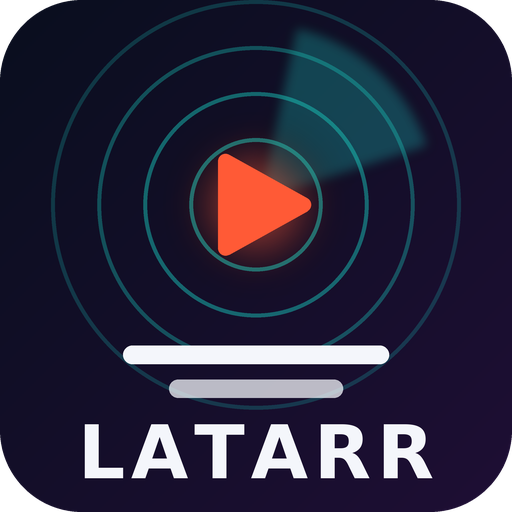
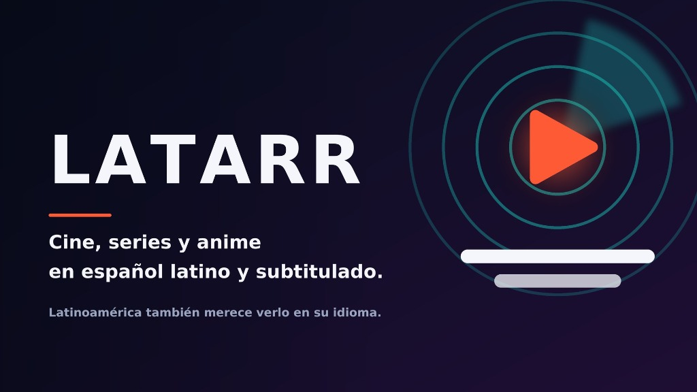
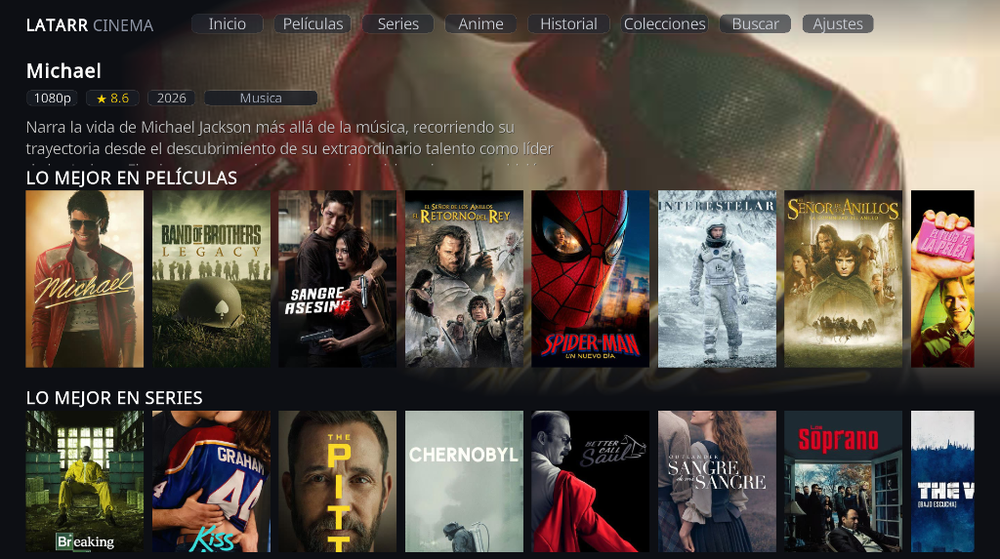
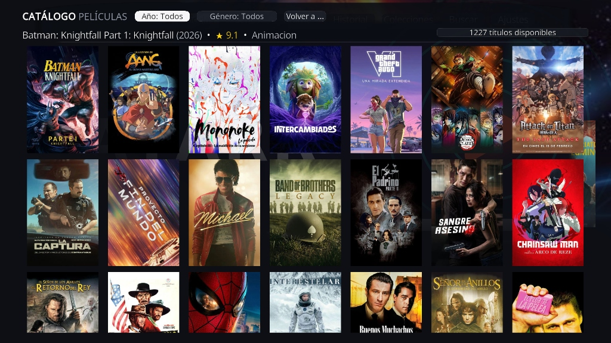
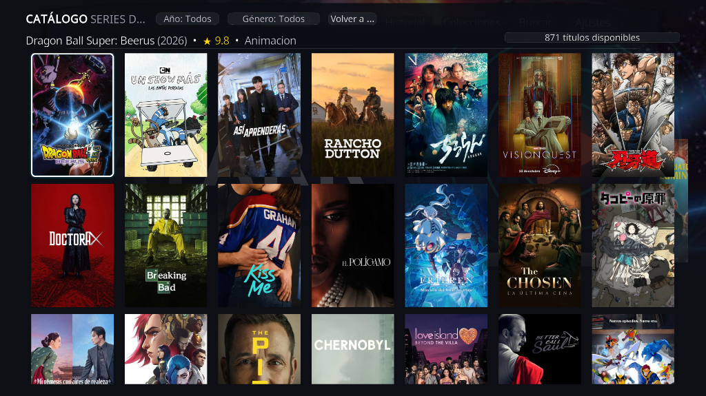
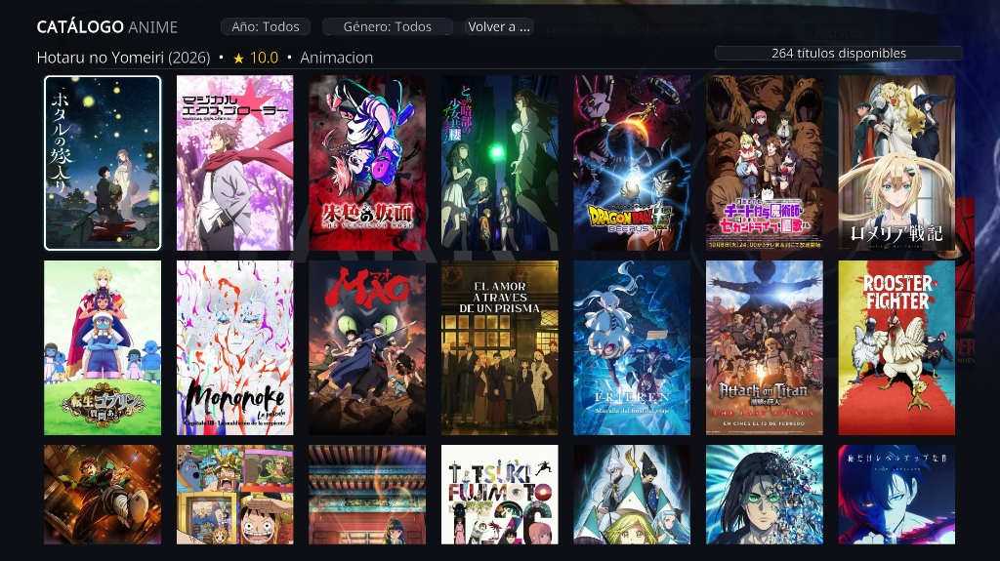
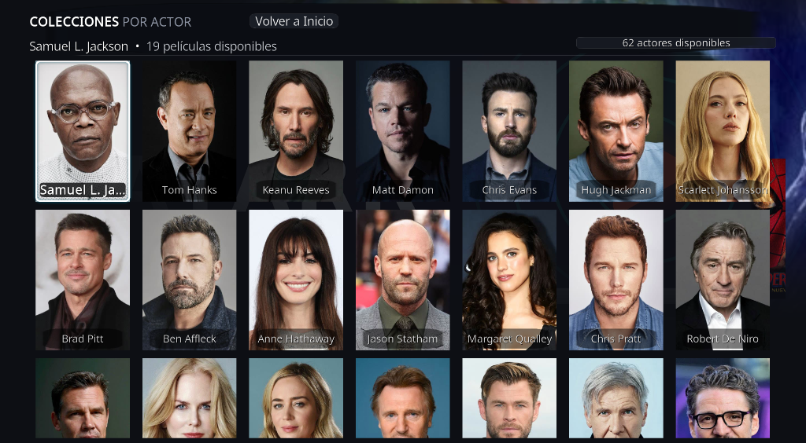
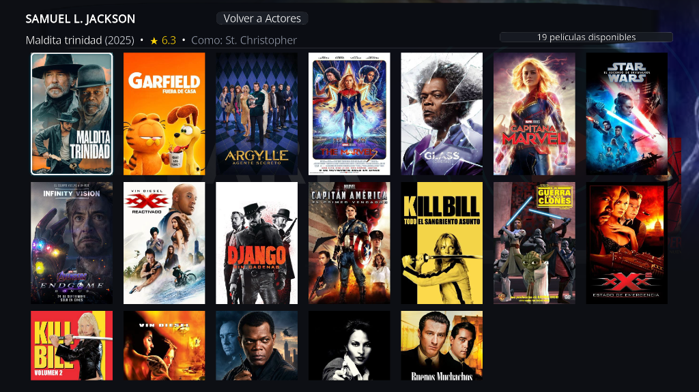
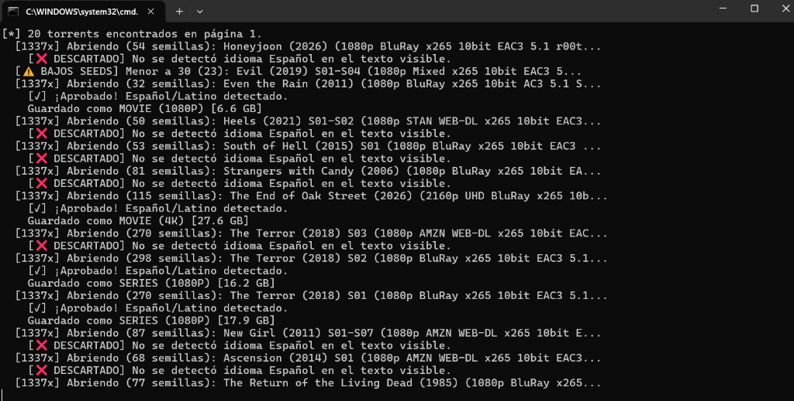
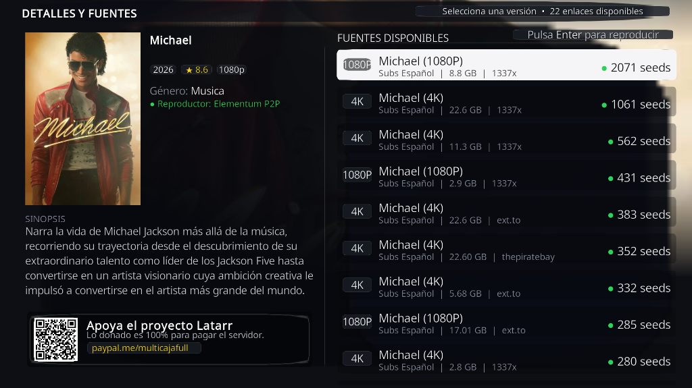

Dile adiós a esperar raspeos eternos de enlaces caídos. LATARR CINEMA cambia el paradigma tradicional: no mostramos carátulas ciegas para luego rezar por un enlace; nuestro catálogo en la nube te muestra únicamente títulos con fuentes vivas y verificadas listas para reproducir en segundos.
Cine, series y anime enfocados en audio Español Latino y subtitulado sincronizado, sin necesidad de cuentas ni mensualidades Debrid.

Olvídate de las aburridas listas verticales de texto del Kodi de hace 15 años. Latarr incorpora una interfaz moderna de ventanas fluidas optimizada para mandos a distancia.

Explora un universo multimedia organizado milimétricamente. Filtra en segundos por Año de estreno o Género sin tiempos de espera.



¿Te gusta un actor? No tienes que buscar película por película. Latarr incluye un panel exclusivo con una amplia selección de los actores más icónicos del cine mundial, en constante expansión.
Selecciona a Samuel L. Jackson, Robert De Niro, Keanu Reeves o Scarlett Johansson y accede al instante a toda su filmografía disponible en el addon, ordenada y lista para ver.


La gran diferencia de Latarr es su tecnología previa: nuestros robots e indexadores escanean continuamente la red antes de que tú enciendas tu televisor.

Cuando seleccionas un título, la pantalla de fuentes te presenta las mejores opciones disponibles ordenadas por velocidad y cantidad de semillas conectadas, tanto en 4K UHD como en 1080p según la disponibilidad de cada obra.

Compatible con Smart TVs, TV Box Android, Google TV, Amazon Firestick, Windows y Mac
Baja el Addon Latarr y el Repositorio Elementum desde los botones superiores a un pendrive (o a la carpeta de descargas de tu equipo).
En Kodi ve a Ajustes ⚙️ > Add-ons > Instalar desde un archivo .zip. Primero instala Elementum y luego el Addon Latarr. ¡Ambos se activan al instante!
Abre LATARR CINEMA en tu Kodi. El catálogo completo se sincronizará automáticamente desde nuestra red global en la nube sin configurar nada más.
Latarr es un desarrollo latino libre, gratuito y sin suscripciones mensuales. Si disfrutas del catálogo y quieres colaborar para mantener los servidores activos y seguir indexando películas y series nuevas periódicamente, ¡tu apoyo hace una gran diferencia!
💙 Donar con PayPal (multicajafull)También puedes escanear el código QR que aparece dentro del addon en la esquina inferior izquierda.